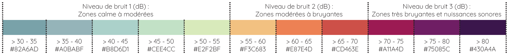

Context
In urban areas, noise affects the quality of life and the health of populations. Strategic noise maps are generally made from models, the result of which may diverge from the noise that can be felt by inhabitants.
The Noise-Planet team (IFSTTAR / CNRS) has developed an application for smartphone, Noise Capture, to collect collaborative data on the noise level in the environment. Raw data is accessible via a web platform, but the evaluation of the quality of this data, their correction and their representation are under consideration. This study addresses these questions as part of the ENSG Engineering Cycle Research Project.
Lyon, a dense city
The metropolis of Lyon offers the best density of Noise Capture measurements in France. Between September 2017 and April 2018, 500 tracks were recovered, for a total of almost 400,000 points.
Street Network
Open Street Map
provides worldwide and under free license road data and street-oriented graphs both for cars and pedestrains which facilitates our calculations.
In large French cities this data can be very precise, and sidewalks networks can be acquired.
Noise Capture
NoiseCapture is a free and open-source Android application that allows users to measure and share the noise environnement. Each noise measure is combined with its GPS track so that the result can be displayed in a interactive maps within the application, but also on this page.
Tracks
The data used are the raw traces, directly downloaded from the server via a python script. The files obtained are in geojson format for traces, and properties for metadata.
Labels
In urban canyons, the planimetric accuracy indicated by Android is not enough to qualify geographic data, especially at the start of the day. The application contextualizes this information by adding declarative labels, such as 'nature', 'train', 'cars', 'wind' etc., which helps to understand the surrounding of the acquisition.
Data analysis and correction
Map Matching
Overview
The principle of Map Matching consists in coinciding a GNSS track to a Geographic Information System.
In a context where the pedestrian network is sufficient dense, we can assume that NoiseCapture contributors are moving in majority on identified paths.
Hidden Markov Model
Newson and Krumm ’s algorithm is based on a Hidden Markov Model (HMM), and makes a compromise between projecting the trace on the nearest street section, and the section more consistent. In this model, each point of the track measured constitute the observable states of the Markov chaine, while the corrected points (projected on the road section) constitute the hidden states. The continuation of most likely hidden states (the route followed on the network) is determined by comparing the Euclidean distance of the hidden state from the observable state and from the road between two successive hidden states.
Nearest path
In order to measure the contribution of Newson and Krumm ’s algorithm, we developed a naive algorithm that orthogonally projects a track to the nearest street section. Statistical indicators have been stored in an SQL database, in order to compare and evaluate models performance.
Results of Map Matching by orthogonal projection (left) and Hidden Markov Model (right). The latter ensures the continuity of the track on the network.
Statistics
Indicators and confidence
We designed three indicators to compare the results of the orthogonal projection and Newson and Krumm ’s algorithm. The length of the projection (between the point provided by Android and its correction) is logically to the advantage of the naive algorithm, even though the difference computed over the 400,000 points is not overly pronounced (7.1m against 8.6m). We also contextualized these values by comparing them with the indicated planimetric precision by Android, keeping in mind the imprecision of this urban information. Thus, 65.4% of the orthogonally projected points are located in their precision radius, against 55.7% when using Markov chains.
Path length
These numbers could be considerably improved by removing or recalculating points too far from the pedestrian network. Conversely, the algorithm of Newson and Krumm ensures the continuity of the trace on the network. In one case out of a thousand, the naive algorithm indeed projects a points out of the pedestiran graph, which is not not connected the previous points. In addition, we calculated the path length between two consecutive projected points. The averages obtained are respectively 9.3m and 6.8m for the naive and HMM based algorithms.
Perspectives
Our first results tend to validate the use of a Map Matching algorithm, in this case the one based on Markov chains, to correct GNSS traces of NoiseCapture data. Developing a python package will make easier the integration of this tool into Noise-Planet's chain process. For better performance this algorithm will have to integrate a buffer zone in order to avoid projections that are too far away.
Visualization
Aggregation
The tracks corrected from the Markov chain algorithm hosted on a server of the Environmental Acoustics Research Unit, could thus be aggregated both in the form of hexagons and road sections. In the second case, the data is aggregated to the road and not the pedestrian network to improve map reading and robustness.
Noise and uncertainty
The number of measurements aggregated as well as the temporal coverage of a day, involve different respective confidence levels to represent the data.
Noise levels
currently, NoisePlanet uses a hexagonal grid to display their raw data. This choice is justified by its form, as a regular hexagon is a unit mesh that can easily fill a map. In addition, the 15m sides used by Noise-Planet correspond to a homogeneous acoustic level area.
The aggregation solution currently offered by the Noise-Planet team could be confronted with an alternative offering combinations of visual variables more readable and generalized to lower scales.

Noise levels on a hex-map (left) and road map (right).
Uncertainty and precision
The use of road segment allows to aggregate a larger number of measures on the same spatial entity. This number can be represented in associating a size proportional to a symbol i.e. a line.
The pros and cons of these two levels of aggregation have yet to be developed at the statistical level. Finally, the effectiveness of proposals incorporating cross representations should be measured, including through a survey.
Uncertainty representation on a hex-map (left) and road map (right).
Publication
This project has been the object of an article and scientific poster, accessible from the icons here.
References
[1] Picaut, J., Fortin, N., Bocher, E., Petit, G., Aumond, P., and Guillaume, G. (2019). An open-science crowdsourcing approach for producing community noise maps using smartphones. Building and Environment, 148:20 – 33.
[2] Newson, P. and Krumm, J. (2009). Hidden markov map matching through noise and sparseness. pages 336–343.
[3] Boukhelifa N., Bezerianos A., Isenberg T., and Fekete J.-D. (2012). Evaluating sketchiness as a visual variable for the depiction of qualitative uncertainty. IEEE Transactions on Visualization and Computer Graphics, 18(12):2769–2778